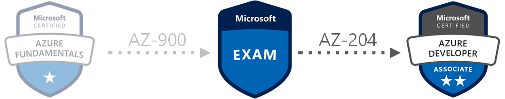

AZ-203 to AZ-204 Exam Changes
February 15, 2020
Estimated reading time: 10 minutes
Second out in this little series of the 2020 Azure certification exam changes is the new AZ-204 exam that will be replacing the old AZ-203 exam.
When I was reading trough the new AZ-204 Skills Measured I quickly noticed that this new exam has a lot of changes from the old AZ-203 exam. There are however some strange changes in my opinion: requirement for Azure SQL and Azure Table Storage knowledge has been removed.
As mentioned above, the largest change is the removal of Azure SQL and Azure Table Storage as well as the removal of Azure Kubernetes Service. The Azure Kubernetes Service was something that there was at least a few questions about in the old exam, but I remember thinking that knowing on how to set up and use AKS was more for administrators or devops and not for developers. So I am not surprised that this requirement has made its way from the developer exam and over to the the new AZ-104 Microsoft Azure Administrator exam instead. I think that this is a good change.
Some other noticeable changes are the removal of using/consuming Azure Batch Service and Azure Search Service. Those are two services that I have never seen used, and it is not often I hear about others that have been using those services. So also these changes are welcome.
Overall I feel that the new AZ-204 exam is now more developer focused. The draft that I have read trough seem in my opinion as a better exam than the previous AZ-203 for measuring developer skills. It might seem a bit slimmed down since so many services are removed from the skills measured, but don’t be fooled. It just means that the remaining skills measured gets more questions in the exam.
I think Azure Table Storage is awesome, and that Cosmos DB is overpriced as it is now.
But I just have to mention a second time here in the ingress that the removal of Azure SQL and Azure Table storage is a strange move. I have noticed that the documentation for Azure Table Storage have been slimmed down lately, and much of it have been moved over to Cosmos DB. This is not a welcome change. I think Azure Table Storage is awesome, and that CosmosDB is sub-par and overpriced. There is a lot of functionality in Cosmos DB, but it is not often one needs them.
I am looking forward to have a try at this new exam and might even sign up for the beta test just to get a glance of it. If you want you can read the new Skills Measured here at Exam AZ-204: Developing Solutions for Microsoft Azure (Scroll down to the AZ-204 section)
The highlights of the changes from AZ-203 to AZ-204 are:
- Azure Batch services is out
- Azure Kubernetes Service is out
- Decreased focus on PaaS and IaaS compute solution (Sections are now combined)
- Azure Web App for Containers is out
- Azure App Service mobile apps is out
- Azure App Service API apps is out
- Storage Tables are out
- Azure SQL is out
- Increased focus on Cosmos DB
- Increased focus on Azure security
- Azure App Configuration is in
- Increased focus on monitoring and caching
- Integration with Azure Search is out
- Application Gateway is out
So let us have a more detailed look at what has changed for each section on the syllabus for this exam:
Section 1: Develop Azure compute solutions (25-30%)
The previous two sections: Develop Azure Infrastructure as a Service Compute Solution and Develop Azure Platform as a Service Compute Solution have been combined into this new section.
Those two sections previously accounted for 30-40% of the exam questions.
They now account for only 25-30%.
The topics about Azure Batch Service, Azure Kubernetes Service, App Service Mobile and API Apps and Azure Functions in Python have been removed. I could not see any new additions in this section.
So far this seems like a very slimmed down compute section that is more focused on Web Apps, Functions and VMs rather than “a bit of everything” like before.
But even with the slimming of topics I would expect more questions about Web Apps and Azure Functions than before. Since a larger portion of the 25-30% relevance is now dedicated to these topics. And all questions one would get about Azure Search, Batch and Kubernetes is now gone.
- 1.1 Implement IaaS solutions
- provision VMs
- Create ARM templates
- Create container images for solutions
- Publish an image to the Azure Container Registry
- Run containers by using Azure Container Instance
- 1.2 Create Azure App Service Web Apps
- Create an Azure App Service Web App
- Enable diagnostics logging
- Deploy code to a web app
- Configure web app settings
- Implement autoscaling rules (schedule, operational/system metrics)
- 1.3 Implement Azure functions
- Implement input and output bindings for a function
- Implement function triggers by using data operations, timers, and webhooks
- Implement Azure Durable FunctionsSection 2: Develop for Azure storage (10-15%)
This section have been heavily revamped. With some good changes, and in my opinion some bad changes. So let’s start with the bad changes.
The references to Storage Tables and Azure SQL have been removed. For me, the removals of both these comes as a it of a shock. As a developer you should be able to connect to a Azure SQL database and retrieve data. The previous material about Azure SQL was heavily centered around good old ADO.NET and Entity Framework. Maybe Microsoft thinks that this is something all developers know how to do from “on-prem”, and since there is no real difference in connecting to a database in the cloud, vs connecting to a database locally, they have removed it. But that is all just speculation on my part.
But the removal of Azure Table Storage and the increased focus on Cosmos DB is a change I really do not like at all. It might not be that large of a surprise, since lately I have noticed that documentation for Azure Table Storage have become thinner and thinner. Some of the documentation have been incorporated into the documentation for Cosmos DB, and some have just vanished.
The increased focus on Cosmos DB is also no real surprise. Cosmos DB is often WAY more expensive to use than most other data storage solutions, and Microsoft wants to earn its money and push consumption onto the customers. The sub 10ms latency and globally distribution of data is some that, in my experience, very few customers actually need. So this change saddens me some. Using Azure Table Storage still is a very cheap way of storing simple data and should be encouraged to use. It is however a small comfort that Cosmos DB has a Table Storage API, so changing from Cosmos DB to Table Storage is a breeze.
So for this section you can expect much more questions about Cosmos DB than before. More questions about Azure blob storage is also to be expected.
- 2.1 Develop solutions that use Cosmos DB storage
- Select the appropriate API for your solution
- Implement partitioning schemes
- Interact with data using the appropriate SDK
- Set the appropriate consistency level for operations
- Create Cosmos DB containers
- 2.2 Develop solutions that use blob storage
- Move items in Blob storage between storage accounts or containers
- Set and retrieve properties and metadata
- Interact with data using the appropriate SDK
- Implement data archiving and retentionSection 3: Implement Azure security (15-20%)
This section has been organized a bit better than the previous section. It has also had an 5% increase in relevance. Up from 10-15% to 15-20%. So this underlines Microsoft’s increased focus on security in Azure.
The gist of the section is about the same. But a new service has been added to the list of topics: Azure App Configuration. This is a service that many developers unfortunately have not head about before or used. It is not a new service, but it is a very good service to use for managing application settings and feature flags when hosting your service on Azure. So this a welcome new service for this section.
With the sections new simplified form, it also may look like Azure KeyVault might get a deserved heightened focus in this new exam. Azure KeyVault is a service that in my experience too few uses, and ALL should use it. There should not really be any excuse not to use this on any service hosted on Azure. Especially now with the Managed Identities the app can use.
So for this new exam I would expect more questions about security in general, and hopefully more about Azure Key Vault.
- 3.1 Implement user authentication and authorization
- Implement OAuth2 authentication
- Create and implement shared access signatures
- Register apps and use Azure Active Directory to authenticate users
- 3.2 Implement secure cloud solutions
- Secure app configuration data by using the App Configuration and KeyVault API
- Manage keys, secrets, and certificates by using the KeyVault API
- Implement Managed Identities for Azure resourcesSection 4: Monitor, troubleshoot, and optimize Azure solutions (10-15%)
As far as I could tell, this section is the section that has received least changes from the old AZ-203 exam.
The largest change is that the topic about implementing AKS scaling strategies is removed.
As one would expect when AKS has been removed from Section 1: Develop Azure compute solutions.
One other minor change is that the topic about autoscaling roles have been moved to Section 1: Develop Azure compute solutions.
So with these changes that make the section more focused on CDN, Caching and monitoring.
So we can expect a few more questions about those subjects than before.
- 4.1 Integrate caching and content delivery within solutions
- Develop code to implement CDN’s in solutions
- Configure cache and expiration policies
- Store and retrieve data in Azure Redis cache
- 4.2 Instrument solutions to support monitoring and logging
- Configure instrumentation in an app or service by using Application Insights
- Analyze and troubleshoot solutions by using Azure Monitor
- Implement Application Insights Web Test and Alerts
- implement code that handles transient faultsSection 5: Connect to and consume Azure services and third-party services (25-30%)
This section has some large changes. First out is that the section has received an 5% increase in relevance on the exam Up to 25-30% from 20-25%.
Second is the big change itself.
Azure Search has been removed.
The Azure Search service is being renamed to Cognitive Search.
So I expect that this service will now be added to the new AI-102 exam instead.
When I studied for the old AZ-203 exam, I was a bit surprised over how large focus there was on Azure Search, and how many questions I got about it on the exam. I have never so far in my career seen this service used by any of my employers or clients. So this is a very welcome change!
There also is no longer a mention of “Establish API Gateways”. I would suspect now that this section purely focuses on Azure API Management instead of having a little bit about Application Gateway as well. So because of this I think there will be no more questions about API Gateway on the new exam.
The rest of the section is very much the same. But with the removal of Azure Search I would expect more questions about the other services mentioned like Logic Apps, Event Grid, Event Hub, Service Bus and Storage Queues.
- 5.1 Develop an App Service Logic App
- Create a Logic App
- Create a custom connector for Logic Apps
- Create a custom template for Logic Apps
- 5.2 Implement API Management
- Create an APIM instance
- Configure authentication for APIs
- Define policies for APIs
- 5.3 Develop event-based solutions
- Note: Creating event models is in scope
- Implement solutions that use Azure Event Grid
- Implement solutions that use Azure Notification Hubs
- Implement solutions that use Azure Event Hub
- 5.4 Develop message-based solutions
- Implement solutions that use Azure Service Bus
- Implement solutions that use Azure Queue Storage queues